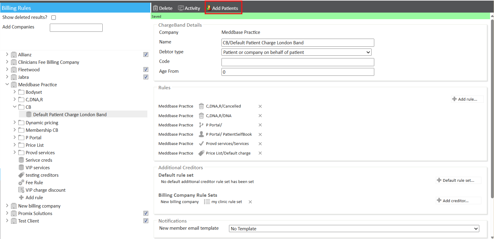
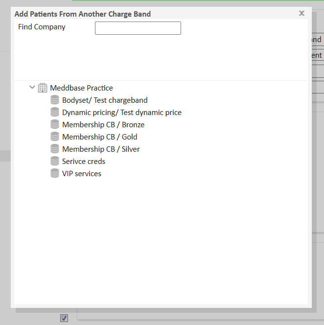

Patients may need to be moved from one charge band to another in bulk. This is particularly useful when a specific charge band is being deleted or restructured.
Please note, patients can only be moved between charge bands if both charge bands belong to the same company.
This article provides step-by-step instructions on how to migrate patients between charge bands efficiently, ensuring smooth transitions within the billing system.
Patients can be moved from one charge band to another of the same company, in bulk. This may be useful, for example, when deleting a specific charge band.
In order to do this, go to 'Admin' > 'Billing Rules'.


The patients from the old charge band will now be set with the new charge band as their default.